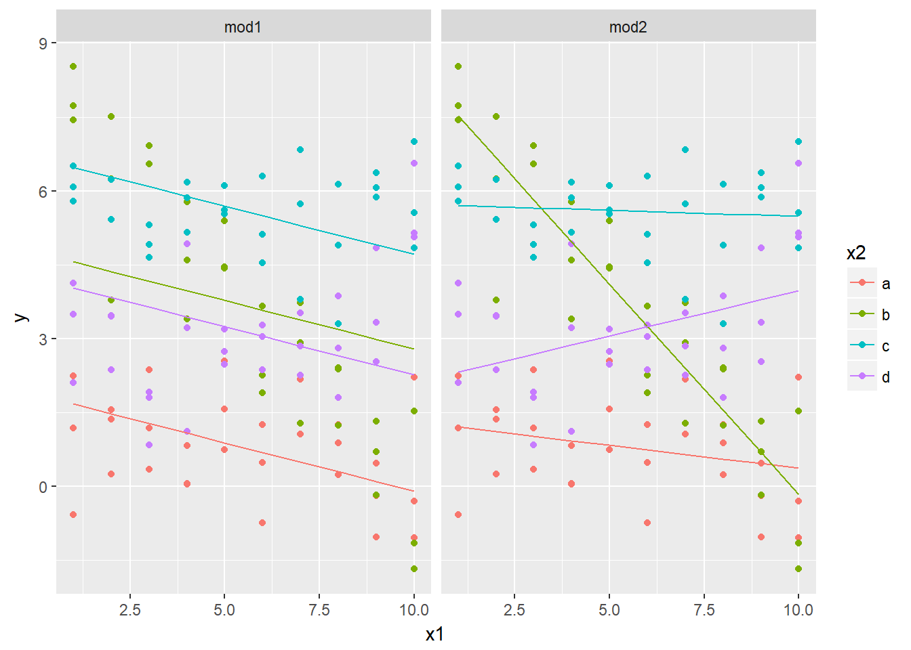
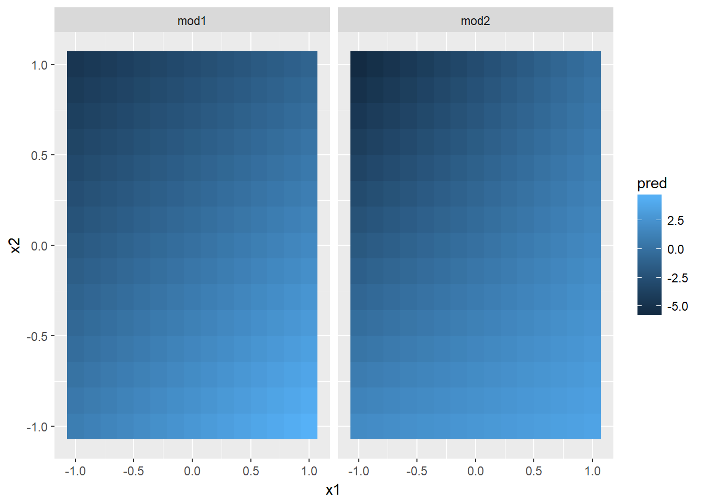
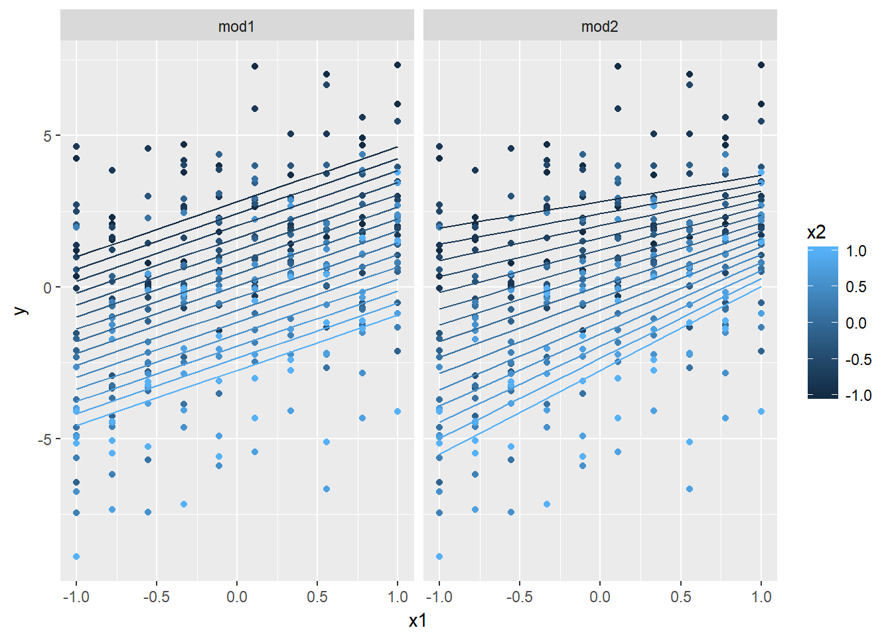

library(tidyverse)## Loading tidyverse: ggplot2
## Loading tidyverse: tibble
## Loading tidyverse: tidyr
## Loading tidyverse: readr
## Loading tidyverse: purrr
## Loading tidyverse: dplyr## Conflicts with tidy packages ----------------------------------------------## filter(): dplyr, stats
## lag(): dplyr, statslibrary(mosaic)## 要求されたパッケージ lattice をロード中です## 要求されたパッケージ ggformula をロード中です##
## New to ggformula? Try the tutorials:
## learnr::run_tutorial("introduction", package = "ggformula")
## learnr::run_tutorial("refining", package = "ggformula")## 要求されたパッケージ mosaicData をロード中です## 要求されたパッケージ Matrix をロード中です##
## 次のパッケージを付け加えます: 'Matrix'## 以下のオブジェクトは 'package:tidyr' からマスクされています:
##
## expand##
## The 'mosaic' package masks several functions from core packages in order to add
## additional features. The original behavior of these functions should not be affected by this.
##
## Note: If you use the Matrix package, be sure to load it BEFORE loading mosaic.##
## 次のパッケージを付け加えます: 'mosaic'## 以下のオブジェクトは 'package:Matrix' からマスクされています:
##
## mean## 以下のオブジェクトは 'package:dplyr' からマスクされています:
##
## count, do, tally## 以下のオブジェクトは 'package:purrr' からマスクされています:
##
## cross## 以下のオブジェクトは 'package:stats' からマスクされています:
##
## binom.test, cor, cor.test, cov, fivenum, IQR, median,
## prop.test, quantile, sd, t.test, var## 以下のオブジェクトは 'package:base' からマスクされています:
##
## max, mean, min, prod, range, sample, sumlibrary(modelr)##
## 次のパッケージを付け加えます: 'modelr'## 以下のオブジェクトは 'package:mosaic' からマスクされています:
##
## resample## 以下のオブジェクトは 'package:ggformula' からマスクされています:
##
## na.warnmod1 <- lm(y~ x1 + x2, data = sim3)
mod2 <- lm(y~ x1 * x2, data = sim3)sim3 %>% gather_predictions(mod1,mod2) %>%
gf_point(y ~ x1, color=~x2) %>% gf_line(pred ~ x1 | model)
mod1 <- lm(y~ x1 + x2, data = sim4)
mod2 <- lm(y~ x1 * x2, data = sim4)grid <- sim4 %>% data_grid(x1 = seq_range(x1,15),x2 = seq_range(x2,15)) %>%
gather_predictions(mod1,mod2)
gf_tile(grid, x2 ~ x1|model, fill = ~pred)
gf_point(sim4, y~x1,color=~x2) %>%
gf_line(data =grid, pred ~ x1|model, group= ~x2)
gf_point(sim4, y~x2,color=~x1) %>%
gf_line(data =grid, pred ~ x2|model, group= ~x1)